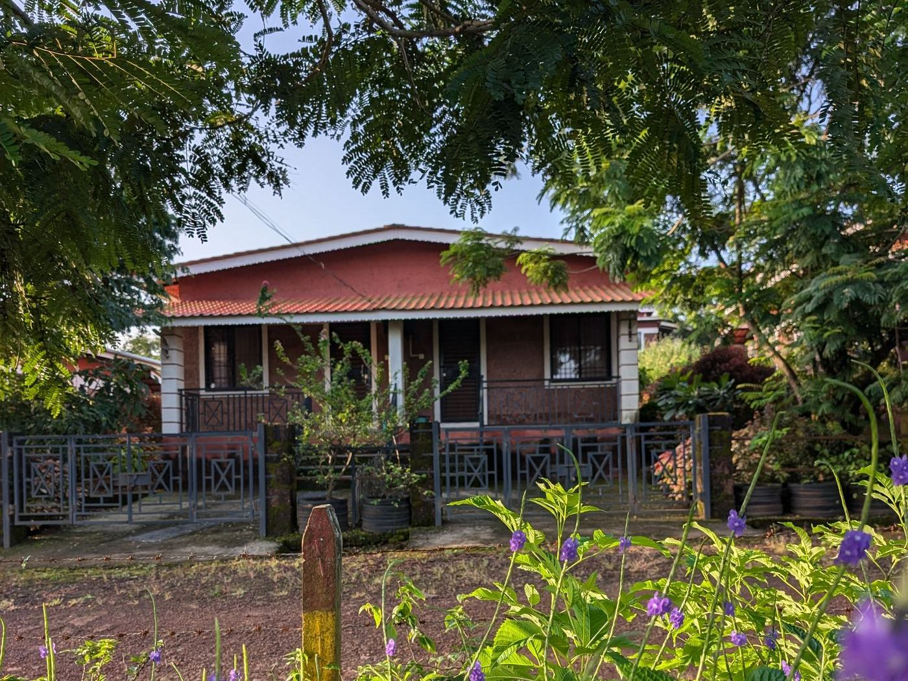
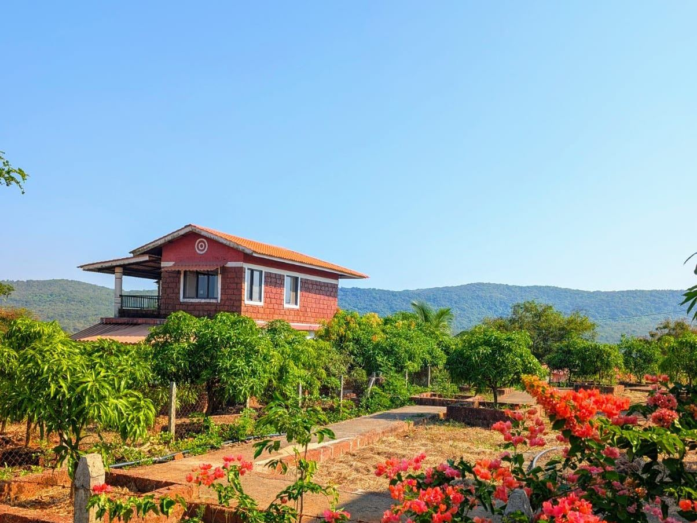
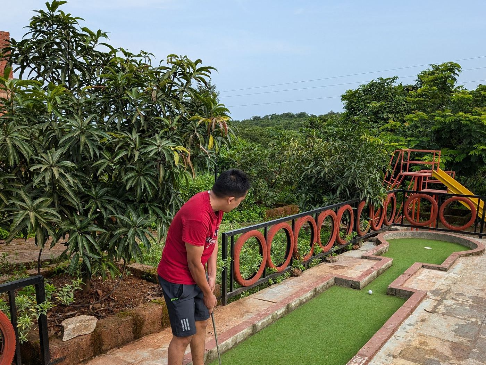
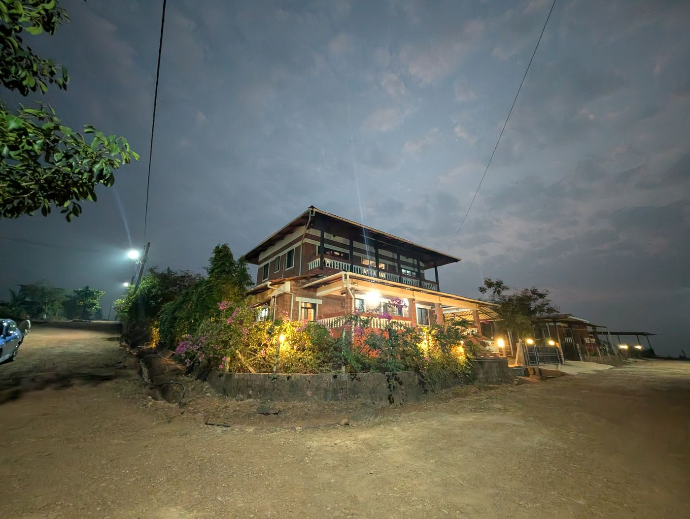

1000 Trees Holiday Homes, Dapoli
An NA plotting and bungalow project of 74 plots, adjacent to our Resort Dapoli project, with the trees, roads, water and power already in place.

- 74NA plots · launched Feb 2025
- 2,000+sq ft · plot sizes
- 1,000+trees · Miyawaki method
- 9 kmto Kolthare beach
Sizes, rates and what is included
- Project type
- NA plotting and bungalow project
- Launched
- February 2025
- Total plots
- 74
- Plot sizes
- 2,000 sq ft and 3,000 sq ft plus
- On each plot
- Mango, cashew, parijatak and sonchafa trees, water connection, MSEB power
- Indicative rate
- Around ₹800 per sq ft. Ask for the current rate card
- Finance
- Bank loan available for plot and bungalow together
- Nearest beach
- Kolthare, about 9 km
- Access
- Tar road up to the project. Shops, school, temple and village community nearby
What is on site
Green and quiet
Gardens, walkways, sitouts, a yoga deck, a green gym and the Miyawaki forest plantation running through the layout.
Things to do
Mini golf, a life-size chess board, table tennis, carrom and board game corners, a children's play park, and a library with self-serve tea and coffee.
Temples
Shri Gajanan Maharaj, Shri Swami Samarth and Shri Satya Sai Baba temples within the project.
Central kitchen
A shared kitchen facility, so arriving late on a Friday never means cooking or driving out to find food.
Housekeeping and maintenance
An onsite team keeps your plot, plantation and bungalow looked after between visits. Nothing to arrange from the city.
Water security
Two farm ponds harvesting roughly seven lakh litres of rainwater, which carries the plantation comfortably through April and May.
See it before you drive down



Resort Dapoli, and why it matters
1000 Trees is adjacent to Resort Dapoli, our earlier project, now around 90 per cent sold across 38 plots. It has 400 trees, an onsite maintenance team, a central kitchen, mini golf, a Ganesh temple and a children's park, and sits right on state highway SH96.
Owners there are from Mumbai, Pune, the USA, the UK and Dubai. On a site visit you walk through it, which means you are not judging 1000 Trees from a plan. You are looking at the finished version of it.
What you receive
- Government NA order
- Government sanctioned NA plan
- Individual 7/12 extract for your plot
- Registered copy of the sale deed
- MSEB sanctioned power supply
- Government approved bungalow construction plan
- House number registration with the Grampanchayat
Complete, individual documentation for every plot, handed over as part of the purchase. It is the reason buyers from seven countries have been comfortable buying here.
Where it is
Near Dapoli in Ratnagiri district, about 9 km from Kolthare beach, with tar road access to the project and shops, a school, a temple and a village community nearby.
Common questions
How many plots are there and what sizes?
74 plots, launched in February 2025. Sizes start at 2,000 sq ft and go to 3,000 sq ft and above. Ask for the current availability list, because the layout sells plot by plot.
What does each plot come with?
A mango, a cashew, a parijatak and a sonchafa tree already planted, plus a water connection and MSEB sanctioned electricity brought to the plot itself.
What is the Miyawaki method?
A dense, multi-layered planting technique developed by the Japanese botanist Akira Miyawaki, where native species are planted close together so the canopy closes far faster than conventional plantation. Over 1,000 trees across the project were planted this way.
Is bank loan available?
Yes, for the plot and the bungalow together. Bring your income documents to the site visit and we can give you an indicative view of what you would be eligible for.
How far is the nearest beach?
Kolthare beach is about 9 km from the project. Dapoli town, with the market, shops and hospital, is a short drive in the other direction, and there are shops, a school and a temple in the village nearby.
Can I build straight away?
Yes. There is a government approved bungalow construction plan, and an existing 1BHK studio bungalow you can walk through on your site visit to see the finished standard.
Who looks after the property when I am not there?
An onsite maintenance team, housekeeping and a central kitchen, shared with the adjacent Resort Dapoli project. That is what makes owning a house four hours from the city easy rather than a chore.
Book a site visit
Walk the plots, see the ponds and the plantation, and go through the finished bungalow next door. WhatsApp Kedar on +91 77740 31242 or send an enquiry.